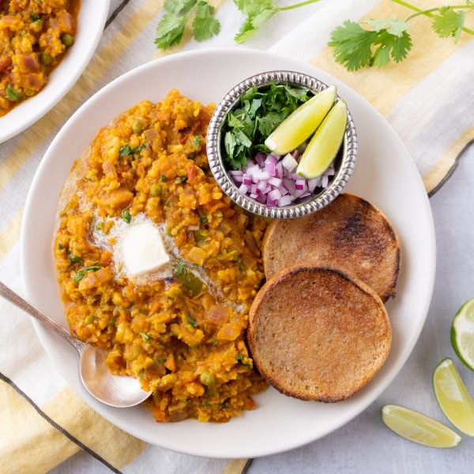

Mashed Indian Curry Vegetable Stew with Buttered Rolls (Pav Bhaji)

Nutrition (per serving)
616.8 kcalCalories
21.2 gProtein
82.2 gCarbs
26.3 gFat
Full nutrition table
| Calories | 616.8 kcal |
| Total fat | 26.3 g |
| Saturated fat | 14.7 g |
| Trans fat | 1.3 g |
| Cholesterol | 56.7 mg |
| Sodium | 416.5 mg |
| Carbohydrates | 82.2 g |
| Fiber | 14.6 g |
| Sugars | 19.6 g |
| Protein | 21.2 g |
| Potassium | 2182.2 mg |
| Calcium | 172 mg |
| Iron | 6.4 mg |
| Vitamin A | 1438.9 IU |
| Vitamin C | 82.8 mg |
| Vitamin D | 15.8 IU |
Cookware
Ingredients
- 2 mediumcarrots
- 36 fl ozchicken or vegetable broth
- 1 small bunchcilantro
- 1 cupfrozen peas
- 4 clovesgarlic
- 2 (1 inch) piecesginger root
- 1green bell pepper
- 1lime
- 1 mediumred onion
- 4 mediumred potatoes
- 4tomatoes
- 4 tbsptomato paste
- 4whole grain buns or rolls
- brown sugar
- butter, unsalted
- cayenne pepper
- chili powder
- cinnamon, ground
- curry powder
- salt
Steps
- Wash and dry the fresh produce.4 medium red potatoes
2 medium carrots
1 green bell pepper
2 (1 inch) pieces ginger root
4 tomatoes
1 lime
1 small bunch cilantro - Peel and small dice potatoes and carrots. Seed and small dice bell pepper. Transfer veggies to a large pot.
- Add broth, sugar, and salt to the pot; stir to combine, then scrape down the edges of the pot so that veggies are submerged. Cover and bring to a boil over high heat; reduce heat to medium and simmer until potatoes and carrots are fork-tender, about 15 minutes.28 fl oz (3 ½ cups) chicken or vegetable broth
1 tsp brown sugar
½ tsp salt - Meanwhile, preheat a large skillet over medium heat.
- While the skillet heats up, peel and small dice onion.1 medium red onion
- Once the skillet is hot, add butter and swirl to coat the bottom. Add the onion (reserving a handful for garnish) and cook, stirring occasionally, until it begins to soften, about 5 minutes.¼ cup butter, unsalted
- Meanwhile, peel and mince ginger and garlic; add both to the skillet with the onion. Continue to cook, stirring often, until soft and fragrant, about 3 minutes.4 cloves garlic
- Small dice tomatoes.
- Add tomatoes, additional broth, peas, tomato paste, and spices to the skillet. Continue to cook, stirring often, until sauce thickens and peas are heated through, about 2 minutes. Remove from heat.8 fl oz (1 cup) chicken or vegetable broth
1 cup frozen peas
4 tbsp tomato paste
4 tsp curry powder
4 tsp chili powder
1 tsp salt
½ tsp cinnamon, ground
⅛ tsp cayenne pepper - Once the potatoes and carrots in the pot are tender, remove from heat. Use a potato masher to gently crush the veggies, forming a textured mash. Transfer the tomato sauce to the pot and mash once more to combine.
- Return veggie mash to the stove over medium-high heat. Continue to cook, stirring often, until slightly thickened, 3-4 minutes.
- Meanwhile, cut lime into wedges and set aside.
- Shave cilantro leaves off the stems; discard stems and mince the leaves. Add cilantro to the vegetable mash (reserving a handful for garnish) and stir to combine. Remove from heat.
- Toast rolls if desired, and spread with butter.4 whole grain buns or rolls
2 tbsp butter, unsalted - Divide veggie mash between plates and top with more butter. Serve with onion, cilantro, lime wedges, and buttered rolls. Enjoy!4 tsp butter, unsalted